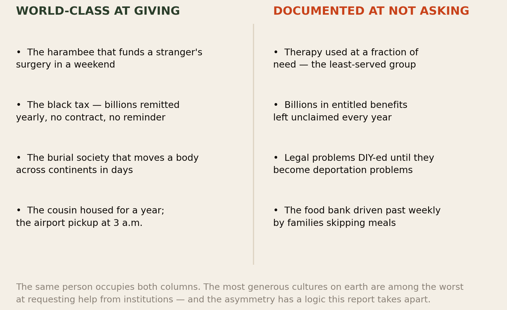
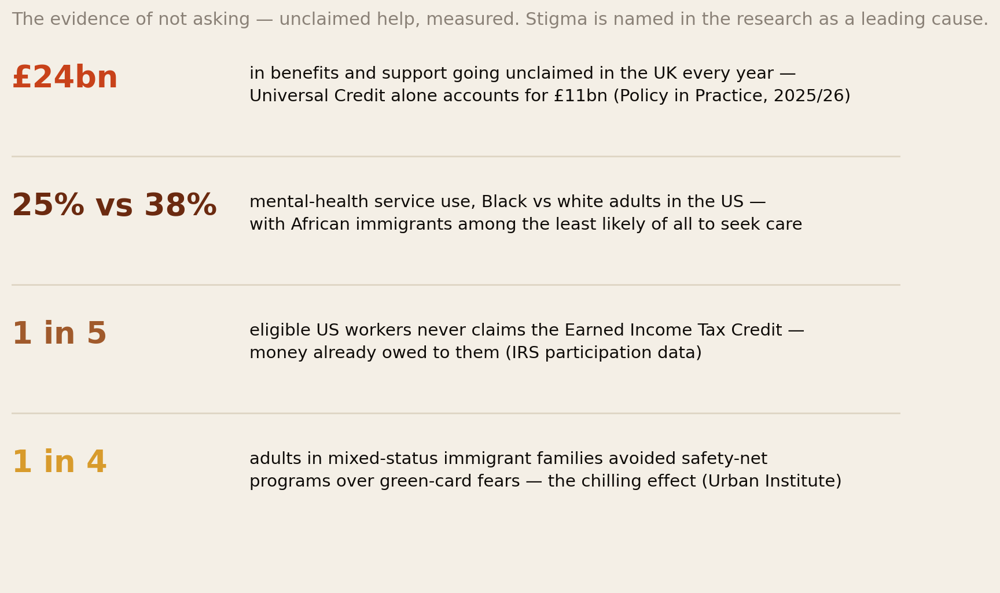
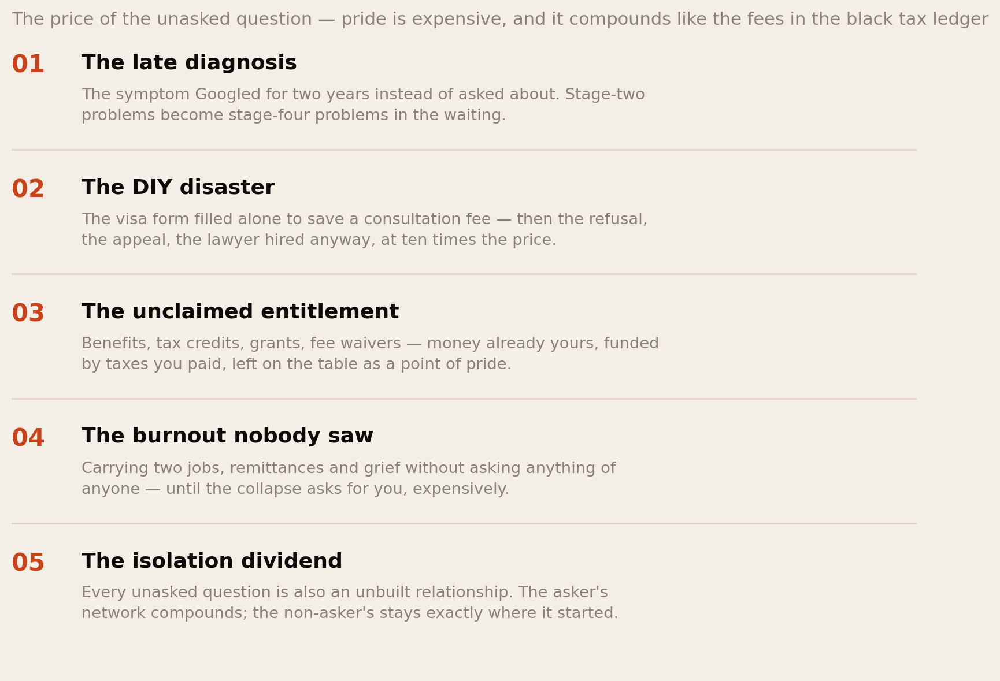
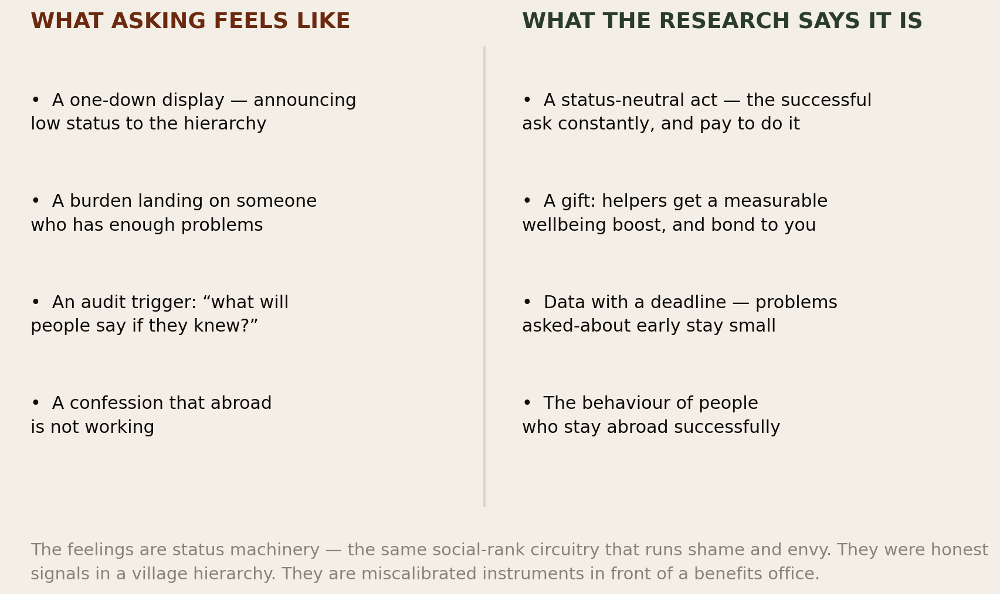
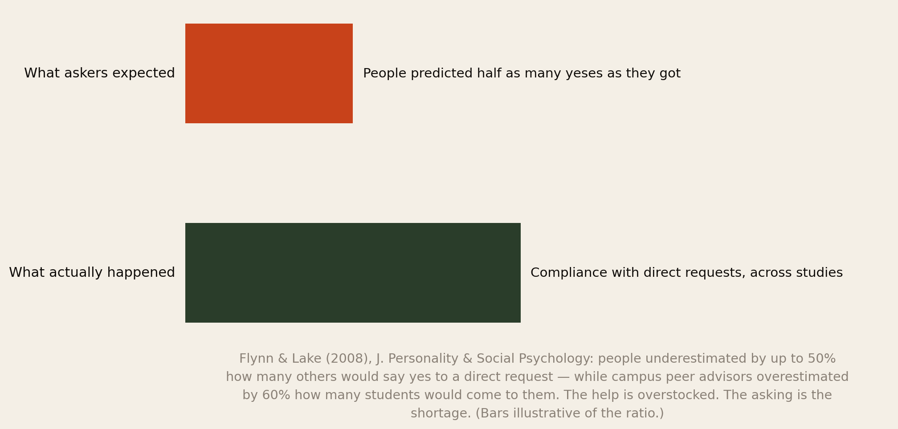
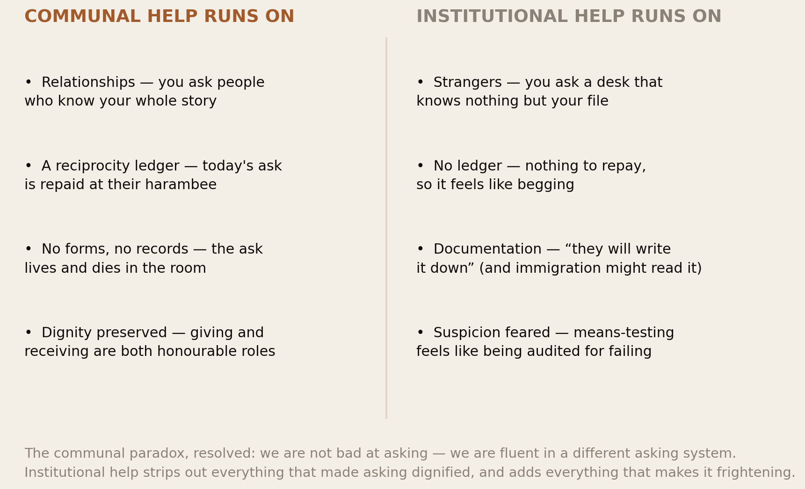
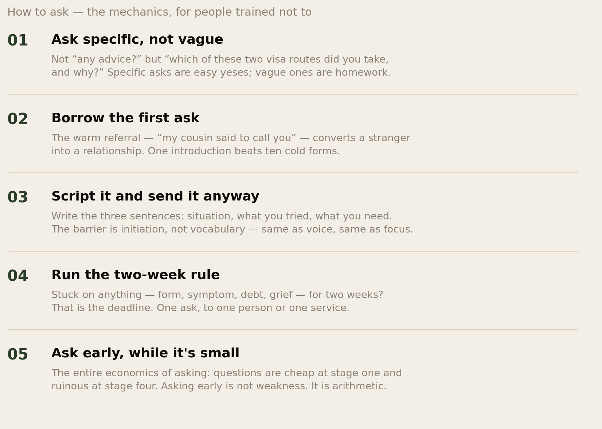
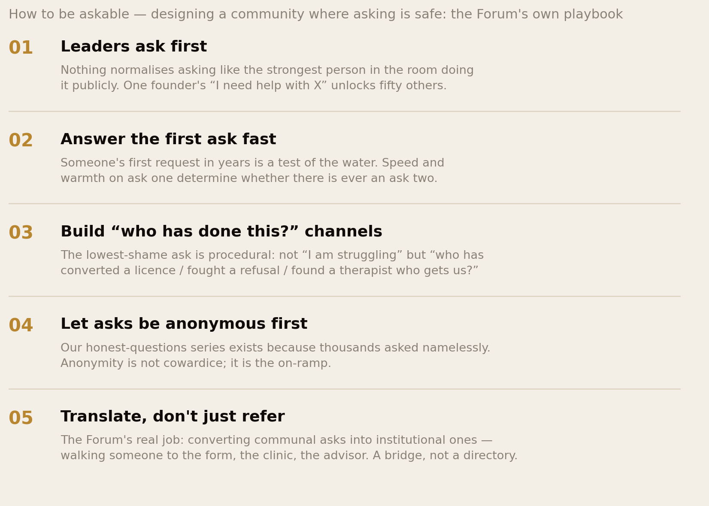

Why We Don’t Ask.
The cultures that invented the harambee — that fund a stranger’s surgery in a weekend and remit billions home without a single contract — leave £24 billion in benefits unclaimed, use therapy at a fraction of need, and drive past the food bank while skipping meals. This report is about the givers’ paradox: why the most generous people on earth struggle to request help from institutions, what the unasked question actually costs, the research showing we underestimate by half how many people would say yes — and how a community can make asking as honourable as giving.
Section 01The Short Version
A member of this network put it in one sentence at a meetup: “I have driven four people to the airport this month, and I have had a toothache since March.” Everyone laughed, because everyone recognised it. This report is about why the laughter was nervous.
- The paradox is real and measurable. The same populations that run the world’s densest informal help systems — harambee, black tax, burial societies, the 3 a.m. airport run — are documented under-users of institutional help: Black adults use mental-health services at 25% versus 38% for white adults, with African immigrants among the least-served groups of all; £24 billion in UK benefits goes unclaimed yearly; a fifth of eligible US workers never claims the EITC; one in four adults in mixed-status immigrant families avoids safety-net programs out of immigration fears.
- The machinery is status, not ignorance. Asking feels like a one-down display — the same social-rank circuitry that runs shame and envy reads a request for help as an announcement of falling. In the diaspora’s two-mirrors world the reading doubles: asking confirms the host mirror’s verdict that you are behind, and betrays the home mirror’s image that you have made it.
- The burden belief is arithmetic run backwards. In Flynn and Lake’s landmark studies, people underestimated by up to 50% how many others would agree to a direct request — while campus advisors overestimated by 60% how many students would come to them. Askers count the cost of the helper’s yes; helpers feel the cost of saying no — and research finds helping reliably boosts the helper’s wellbeing. The help is overstocked. The asking is the shortage.
- The communal paradox has a clean resolution: we are fluent in a different asking system. Communal help runs on relationships, reciprocity ledgers and preserved dignity. Institutional help strips all three out and adds forms, records and means-testing — everything that made asking honourable removed, everything that makes it frightening added. We are not bad at asking. We are asked to ask in a foreign grammar.
- The fix runs in both directions — individuals learning to ask (specific, early, scripted, two-week rule), and communities learning to be askable: leaders asking first, first asks answered fast, anonymous on-ramps, and the Forum doing its real job — translating communal asks into institutional resources. Asking, like confidence and voice, is built by reps.
We measure love in what we give and pride in what we never request. The first half built the strongest help network on earth. The second half is quietly starving inside it.
Section 02The Givers’ Paradox

Name the paradox precisely, because it is stranger than it first sounds. African cultures are not merely willing to help; they are engineered around it. The harambee is a formal technology for aggregating help; the black tax moves tens of billions of dollars a year on nothing but obligation and love; burial societies execute international logistics that would humble a corporation; and every member of this network has housed, fed, fetched, funded or vouched for someone this year. Giving is not an act in our cultures. It is infrastructure.
And yet: the toothache since March. The overdraft nobody knows about. The depression prayed over but never treated. The benefits never claimed by families who qualify three times over. If unwillingness to help were the cause, the first column of Fig 1 could not exist. Something else is happening — something specific to receiving, and more specific still to receiving from institutions. That is the trail this report follows: first the evidence (Section 03), then the cost (04), then the machinery — status (05), the burden belief (06), the logic gap (07), and the institutions themselves (08) — and then, because this library does not end at diagnosis, the rebuild (09–12).
Section 03The Evidence of Not Asking

The under-asking is not a stereotype; it is a documented pattern across every category of institutional help:
- Mental health: US survey data puts mental-health service use at about 25% for Black adults versus 38% for white adults, and the research on African immigrants specifically finds them among the least likely of all groups to seek or receive care — despite carrying migration stress, racism and dislocation. The UK systematic reviews list the barriers in order: stigma first, then cultural framing (“madness” vs illness), discrimination, and access.
- Money already owed: £24.1 billion in UK benefits and support goes unclaimed every year — £11 billion of it Universal Credit — and the researchers name awareness, stigma, and distrust of the system as the three causes. In the US, roughly one in five eligible workers never claims the EITC. This is not charity being refused. It is your own tax money, budgeted for you, left on the table.
- The chilling effect: Urban Institute surveys find roughly one in six adults in immigrant families — and one in four in mixed-status families — avoided safety-net programs for fear of green-card consequences, keeping an estimated three to four million children from help they qualify for. Fear, not eligibility, is the gatekeeper.
- And the quiet categories nobody surveys well: the legal questions DIY-ed from forums until they become removal proceedings; the food banks used by every community except ours at comparable need levels, as food-bank operators themselves report; the free debt advice, fee waivers, hardship funds and university extensions that go unrequested by exactly the students working three jobs. The pattern repeats at every desk: the help exists, the eligibility exists, and the ask never arrives.
Section 04The Price of the Unasked Question

Not-asking presents itself as free — that is its trick. Nothing visible happens. But this library has learned to price silence, and the unasked question compounds exactly like the deferral ledger: the symptom Googled for two years arrives at the clinic two stages later; the visa form filled alone to save a £150 consultation returns as a refusal, an appeal, and a £5,000 lawyer; the unclaimed entitlement forfeits thousands a year from families sending 15% of income home; the uncarried load nobody was asked to share arrives all at once, as collapse, at the worst possible price. Our investment-failure research found the same signature: the losses cluster where nobody asked anyone anything before wiring the money.
And there is a subtler line item, easy to miss: the isolation dividend. Every ask is also a relationship under construction — the person who helped you convert your licence is now invested in your career; the Franklin effect means people who help you come to like you more, not less. The non-asker forfeits all of it. Their competence stays private, their struggles stay private, and their network stays exactly the size it was at the airport. In an economy where the front door discounts your name, the referral network built by asking is not a nicety. It is the side door — and pride keeps it locked from the inside.
Section 05What Asking Feels Like

Why does a two-minute request feel like a cliff? Because asking is processed by the oldest accounting system we carry: social rank. Paul Gilbert’s research — the same framework behind our shame and envy reports — shows the emotional palette evolved substantially to track standing: pride marks a rise, shame marks a fall, and a request for help registers, in this ancient bookkeeping, as a voluntary one-down display. To ask is to announce need; to announce need, in a hierarchy, is to fall. The feeling is not irrational. It is a perfectly functioning instrument — calibrated for a world that no longer surrounds you.
Migration then triples the reading. In the two-mirrors economy, asking for help abroad confirms the host mirror’s whisper that you are behind — and threatens the home mirror’s portrait of the relative who made it: how can the one in London be at a food bank? Add the childhood training — a generation raised where questions were insolence and needs were not announced to adults — and the communal audit waiting behind any disclosure, and you get the full stack: status alarm, image management in two directions, trained silence, and shame insurance, all firing over a request for a form. Naming the stack is the beginning of disarming it, because every layer is a feeling about asking — and not one of them is information about the actual price.
Section 06The Burden Arithmetic

“I don’t want to be a burden” presents itself as consideration. The research says it is a calculation error — a large, systematic, replicated one. In Flynn and Lake’s studies, people about to ask strangers for favours predicted their success rates — and underestimated actual compliance by as much as 50%. The mechanism is an empathy gap: askers fixate on the cost of saying yes (the helper’s time, effort, inconvenience), while the people asked feel the cost of saying no — the social discomfort of refusing a human being to their face. You are budgeting their generosity using your anxiety as the price list.
The companion findings complete the demolition of the burden belief. The same research programme found campus peer advisors overestimated by 60% how many students would come to them — the helpers are sitting there, stocked and waiting, wondering why nobody asks. Decades of helping research find that giving help reliably improves the helper’s mood and sense of meaning — which every African already knows from the giving side: think of what it does for you to be the one who could help. Refusing to ask does not spare people that burden. It denies them that gift. And the Franklin effect adds the final inversion: people who have helped you like you more afterwards, because helping writes you into the story of their generosity. The burden arithmetic, run correctly: a specific, honest ask is cheap for them, pleasant for them, bonding for both of you — and priceless for you. We have simply been running it upside down, in exactly the way our comparison machinery predicts: overestimating how much our fall matters to an audience that is mostly worrying about its own.
Section 07The Two Logics of Help

Here is the resolution of the paradox, and it flatters us more than the stigma story does. African cultures ask constantly — but through a specific technology. The communal ask travels along a relationship: the person asked knows your whole story, so no humiliating explanation is needed. It sits in a reciprocity ledger: today’s request is yesterday’s contribution and tomorrow’s repayment, so receiving is not falling — it is taking your turn. It leaves no record: the ask lives in the room. And it preserves dignity by design: at a harambee, the recipient stands publicly, named and honoured, while the whole community gives — receiving is a ceremonial role, not a shameful one.
Now walk the same person to an institution. The desk is a stranger who knows nothing but your file and needs the whole humiliating story from zero. There is no ledger — nothing to repay, no turn being taken, which is precisely why it feels like begging: our cultures define begging as asking outside the reciprocity system. Everything is written down — and Section 08 will show that fear is not paranoia. And the means test inverts the harambee’s dignity: instead of standing honoured while the community gives, you sit suspected while an official verifies you are genuinely failing. Every feature that made asking honourable has been stripped out; every feature that makes it frightening has been added. The diaspora’s under-asking is not a cultural defect meeting a neutral system. It is a sophisticated asking culture meeting a system built in a different grammar — the same collision this library has mapped for time, attention and voice. And as with all of them, the answer is translation, not conversion.
In our grammar, asking a stranger with nothing to repay is begging. The system calls it “accessing services”. Nobody translated — so a generation chose hunger over what was mislabelled as shame.
Section 08The Institution Gap
This report will not pretend the distrust is imaginary, because the honest version is stronger: some of the not-asking is rational, and the institutions earned it.
- The immigration shadow is real. The public-charge era taught immigrant families that using benefits could cost them status — and though rules changed, the chilling effect outlived the rule: one in six immigrant families still avoids programs they legally qualify for. “They will write it down” is not superstition; it is a lesson recently taught.
- The clinical distrust has receipts — from documented racial bias in pain treatment and diagnosis to the UK pattern where Black patients are over-represented in coercive psychiatry (detention) and under-represented in voluntary talking therapy. When the front door mistreats people, the community learns to use no door at all — and teaches its children the same.
- The church became the trusted institution for a reason — it runs on the communal grammar: known faces, no files, prayer instead of paperwork, dignity intact. Our faith research showed what it carries. The honest limit: a pastor can hold your hand through depression but cannot prescribe for it, and “it is well” is not a treatment plan. The trusted institution and the equipped institution are, too often, different buildings — and the community’s job (Section 11) is to build the corridor between them.
- But note what the earned-distrust story cannot explain: the unclaimed EITC requires no interview; the untouched fee waiver carries no immigration risk; the free debt advice keeps no file that matters. The rational distrust is real, and it has become a cover story for the status machinery of Sections 05–06 — the same double-audit we ran on structure versus dread in the procrastination report. Both lists deserve respect. Only one should be getting your excuses.
Section 09What the Successful Ask
Now the reframe that dissolves the status math from above, because the fastest way to kill a false belief is to look at who does not hold it. The most successful people you can name are professional askers. Executives retain coaches — paid help-asking about their own jobs. The wealthy do not do their own taxes, contracts, or investing; they assemble advisors and ask them constantly. Surgeons request consults as routine; pilots ask control for everything; elite athletes employ people whose entire role is to be asked. Go up any hierarchy — corporate, academic, athletic — and the density of asking rises. The junior engineer struggles alone for a week; the principal engineer asks in the first hour, because their time is too valuable for pride.
Read that against Section 05 and the inversion completes: asking is not a display of low status. Hoarding problems is. The one-down feeling is a village instrument mismeasuring a world where the one-up move is deploying other people’s expertise fast. Edmondson’s psychological-safety research — which our voice report covered — found the best teams report the most problems, because surfacing them is safe and useful; the worst teams are silent. The same is true of lives. The diaspora’s most quietly successful members are, look closely, its best askers: the one who asked which accountant, which mortgage broker, which school, which lawyer — and compounded every answer. They were never less proud than you. They just ran the arithmetic correctly.
Section 10How to Ask

For the individual, asking is a skill with mechanics — and like confidence and voice before it, it is built by graded reps, not by waiting for the feeling. Ask specific, not vague: “which of these two visa routes did you take, and why?” is a two-minute yes; “any advice?” is homework nobody starts. Borrow the first ask: the warm referral — “my cousin said to call you” — wraps the institutional stranger in a communal relationship, which is why it works so well on us; use it deliberately. Script it: three sentences — situation, what you tried, what you need — written before courage is consulted; the barrier is initiation, not vocabulary. Run the two-week rule: anything you have been stuck on for two weeks — a form, a symptom, a debt, a grief — has earned one ask, to one person or one service; this single rule, kept honestly, would recover most of what Section 04 priced. And ask early, while it is small: the entire economics of help-seeking is that questions are cheap at stage one and ruinous at stage four. Asking early is not weakness. It is arithmetic.
Section 11How to Be Askable

Here is the section this network should hold us to, because a community’s asking rate is a design outcome, not a character trait. Leaders ask first: nothing normalises asking like the strongest person in the room doing it publicly — one founder’s visible “I need help with X” unlocks fifty private ones; this is the same modelling machinery (Bandura’s vicarious source) that runs everything else in this series. Answer the first ask fast: someone’s first request in years is a toe in the water, and the speed and warmth of the response decides whether there is ever a second; a community is exactly as askable as its response to a nervous first question. Build “who has done this?” channels: the lowest-shame ask is procedural — not “I am struggling” but “who has converted a Kenyan licence / fought a Schengen refusal / found a therapist who understands black tax?” — because it frames the asker as a navigator, not a case. Keep anonymous on-ramps open: our honest-questions series exists because thousands of people asked namelessly what they could not ask aloud; anonymity is not cowardice, it is the on-ramp, and the traffic on it proves the demand. And translate, don’t just refer: the Forum’s deepest job is being the corridor between the two grammars of Section 07 — not a directory of services but a relationship that walks someone to the form, sits with them at the clinic, converts the institutional stranger into a warm ask. Every diaspora organisation says “community”. The measurable version is this: how many unasked questions died inside it this year, and what did you build so fewer die next year?
Section 12The African Advantage
End the analysis where the paradox flips into an asset. The harambee is not just giving technology — look again: it is asking technology. Someone must stand up, name the need, and put a number on it, in public — and the culture engineered that moment so thoroughly that it became an honour instead of a humiliation: the announcement, the committee, the list, the celebration. Our ancestors solved the exact problem this report describes — how do you make requesting help dignified? — and solved it so well we forgot it was ever a problem. The shame we feel at the benefits office is not ancestral. The solution is ancestral. What is missing is only the translation layer between the solved version and the institutional one.
That is the diaspora opportunity in one sentence: we do not need to learn to ask; we need to re-house asking in structures we already trust. The chama that adds a “who has done this?” round to its monthly meeting. The church that hosts the benefits-checker and the therapist alongside the prayer line. The WhatsApp group with a pinned form: need something? Name it, or name it anonymously. The Forum doing all three on purpose. Communities that build these corridors will compound — every answered ask upgrading someone’s year and thickening the network — while communities that keep measuring pride in unasked questions will keep exporting quiet, expensive suffering. The infrastructure took centuries to build. The retrofit takes a meeting.
Section 13The Uncomfortable Part
First: pride is a bill someone else pays. The unasked question is billed to your children, who inherit the crisis it grew into; to your spouse, who watches the toothache-since-March and the overdraft-nobody-knows; to the friends who would have gladly helped at stage one and instead attend the emergency at stage four. Refusing to ask feels like carrying your own weight. Run the accounts honestly and it is often the opposite: quietly transferring the load, with interest, to the people you were protecting from it.
Second: we make asking hard for each other, then mourn that nobody asks. The community that laments a brother who suffered in silence is often the same one that taxes disclosure — the gossip about the one who went to therapy, the “prayer request” that becomes news by Sunday, the mockery of the man who admitted the business failed, the audit waiting behind every confession. You cannot run a shame economy and a support network on the same rails. Every time we punish an honest ask, we teach ten witnesses to keep quiet — and the funeral eulogy’s “he never told anyone” is, partly, a review of us.
Third: the informal network has limits, and pretending otherwise costs lives. The aunty network is magnificent, and it cannot diagnose diabetes, litigate a refusal, or treat clinical depression — and saying so is not disloyalty to the culture; it is respect for the stakes. The hardest version: sometimes “we take care of our own” functions as a wall that keeps members from care the community cannot actually provide, while providing the community an alibi. The mature position keeps both: the communal system for what it does better than any institution on earth — presence, dignity, belonging, the 3 a.m. pickup — and the institutional system for what love alone cannot do. Knowing which need belongs to which system, and moving between them without shame, is the whole skill this report exists to teach.
Section 14Method & Limits
This report combines help-seeking research, benefits-uptake data, immigration-policy research and social psychology, as at 3 September 2026.
- The utilisation gaps are documented but coarse. The US mental-health figures (≈25% vs ≈38%) are national survey data (SAMHSA/NSDUH) for Black versus white adults broadly; African-immigrant-specific rates come from smaller studies and systematic reviews that consistently find lower use, without one canonical percentage. Under-use relative to need is the consistent finding across this literature.
- The unclaimed-benefits figures (£24.1bn, Policy in Practice 2025/26; ~19–20% EITC non-participation, IRS) are population-wide, not diaspora-specific — no dataset isolates African-diaspora claiming rates. We cite them as the sea everyone is swimming in, with the chilling-effect data (Urban Institute) as the immigrant-specific layer.
- The Flynn & Lake findings (underestimating compliance by up to 50%; advisors overestimating ask-rates by 60%) come from US samples asking small favours of strangers; effect sizes for high-stakes institutional asks are plausibly different. The direction — systematic underestimation of others’ willingness — is well replicated in the help-seeking literature.
- The status-machinery framing (Sections 05–06) applies Gilbert’s social-rank framework and the comparison research from our envy report to help-seeking; it is an established mechanism applied by argument, not a measured study of diaspora askers. The same holds for Section 07’s two-logics analysis and Section 12’s reading of the harambee as asking technology — our syntheses, ethnographically grounded, labelled as argument.
- The earned-distrust section reflects documented policy history (public charge) and documented clinical disparities; the claim that rational distrust also serves as cover story for status avoidance is our interpretation, flagged as such in the text.
- Part of the psychological framework reached us through a secondary source — Mark Manson’s Social Comparison Guide, shared by a member of this network, whose social-rank material also underpinned our envy report. We cite the primary literature (Gilbert, Flynn & Lake, Edmondson); the guide is credited as the pointer, not as evidence.
- Nothing here is clinical advice — except this one instruction, which is: if any question in your life has been unasked for more than two weeks and involves your body, your mind, your debts or your papers, the two-week rule applies today. That is the whole report, in one sentence, and it is the one to act on.
Principal sources: SAMHSA/NSDUH data on mental-health service use by race; Bassey et al. (2024), systematic review of barriers among African immigrants in the UK; Policy in Practice, Missing Out on unclaimed UK benefits; IRS EITC participation data; Urban Institute on the chilling effect; Flynn & Lake (2008) on underestimating compliance and Bohns’ help-seeking programme; Gilbert on social rank; Vogel and Corrigan on help-seeking self-stigma; Edmondson (1999) on psychological safety. Located partly via Mark Manson’s Social Comparison Guide.
Companion reports: What Will People Say?, The Black Tax Ledger, The Envy Economy, Seen and Not Heard, The Cost of Later and the Honest Questions series.
The diaspora helps the diaspora.
Africa Global Forum is a peer network for Africans abroad — help each other, sit together, and bounce ideas. This research is part of an open library, free to read and share.